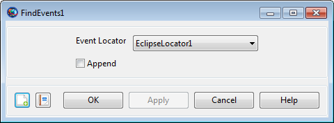

FindEvents — Execute an event location search
FindEventsLocator[{Append =true|false}]
The FindEvents command executes an event location search defined by either of the event location resources, ContactLocator or EclipseLocator. If configured, the search will result in a text-based event report.
An explicit FindEvents command is not necessary
for most simple event location searches. If the locator resource is
configured with RunMode =
'Automatic', FindEvents is
executed automatically at the end of the mission sequence. Manual
execution of the command is most useful to generate custom searches for
part of a mission, or to change search intervals based on mission
data.
The Append option is used to configure how the report file is written. If Append is true, the new report will be appended to the end of the existing file. If Append is false, it will replace the old file. Note that if Append is true, the report may be appended to a file that existed prior to the current GMAT session.
See Also:ContactLocator, EclipseLocator
| Option | Description | ||||||||||
|---|---|---|---|---|---|---|---|---|---|---|---|
Locator | The event locator to execute.
| ||||||||||
| Append | Append to an existing event report (if true) or replace it (if false).
|
|  |
The FindEvents GUI panel is very simple. Choose the event locator to execute from the Event Locator list, which is populated by all existing EclipseLocator and ContactLocator resources. To append the report (if one is generated), enable the Append box.
The FindEvents command can be used inside loops like For and While, but not inside solver sequences, like Target and Optimize. To perform event location based on the result of a solver sequence, put the FindEvents command after the sequence.
When FindEvents is used inside a loop, but there are several potential issues to be aware of. The following snippet illustrates several.
Create EclipseLocator ec
ec.Spacecraft = sat
ec.OccultingBodies = {Mercury, Venus, Earth, Luna, Mars, Phobos, Deimos}
ec.Filename = 'ForLoop.report'
ec.InputEpochFormat = TAIGregorian
% Prevents automatic execution at end of mission
ec.RunMode = 'Manual'
% Lets us manually control search intervals
ec.UseEntireInterval = false
BeginMissionSequence
% Execute FindEvents once before loop, to clear
% out any existing file.
ec.InitialEpoch = sat.TAIGregorian
Propagate prop(sat) {sat.ElapsedSecs = 2400}
ec.FinalEpoch = sat.TAIGregorian
FindEvents ec {Append = false}
% Main loop
For I = 1:1:71
% Set initial epoch of search to current epoch
ec.InitialEpoch = sat.TAIGregorian
% Propagate
Propagate prop(sat) {sat.ElapsedSecs = 2400}
% Set final epoch of search to new epoch
ec.FinalEpoch = sat.TAIGregorian
% Execute search, appending to file
FindEvents ec {Append = true}
EndForPerform a basic eclipse search in LEO:
SolarSystem.EphemerisSource = 'DE421'
Create Spacecraft sat
sat.DateFormat = UTCGregorian
sat.Epoch = '15 Sep 2010 16:00:00.000'
sat.CoordinateSystem = EarthMJ2000Eq
sat.DisplayStateType = Keplerian
sat.SMA = 6678.14
sat.ECC = 0.001
sat.INC = 0
sat.RAAN = 0
sat.AOP = 0
sat.TA = 180
Create ForceModel fm
fm.CentralBody = Earth
fm.PrimaryBodies = {Earth}
fm.GravityField.Earth.PotentialFile = 'JGM2.cof'
fm.GravityField.Earth.Degree = 0
fm.GravityField.Earth.Order = 0
fm.GravityField.Earth.EarthTideModel = 'None'
fm.Drag.AtmosphereModel = None
fm.PointMasses = {}
fm.RelativisticCorrection = Off
fm.SRP = Off
Create Propagator prop
prop.FM = fm
prop.Type = RungeKutta89
Create EclipseLocator el
el.Spacecraft = sat
el.Filename = 'Simple.report'
el.OccultingBodies = {Earth}
el.EclipseTypes = {'Umbra', 'Penumbra', 'Antumbra'}
el.RunMode = 'Manual'
BeginMissionSequence
Propagate prop(sat) {sat.ElapsedSecs = 10800}
FindEvents el
Execute FindEvents in a loop, appending each time:
SolarSystem.EphemerisSource = 'SPICE'
SolarSystem.SPKFilename = 'de421.bsp'
Create Spacecraft sat
sat.DateFormat = UTCGregorian
sat.Epoch = '10 May 1984 00:00:00.000'
sat.CoordinateSystem = MarsMJ2000Eq
sat.DisplayStateType = Keplerian
sat.SMA = 6792.38
sat.ECC = 0
sat.INC = 45
sat.RAAN = 0
sat.AOP = 0
sat.TA = 0
Create ForceModel fm
fm.CentralBody = Mars
fm.PrimaryBodies = {Mars}
fm.GravityField.Mars.PotentialFile = 'Mars50c.cof'
fm.GravityField.Mars.Degree = 0
fm.GravityField.Mars.Order = 0
fm.Drag.AtmosphereModel = None
fm.PointMasses = {}
fm.RelativisticCorrection = Off
fm.SRP = Off
Create Propagator prop
prop.FM = fm
prop.Type = RungeKutta89
Create CoordinateSystem MarsMJ2000Eq
MarsMJ2000Eq.Origin = Mars
MarsMJ2000Eq.Axes = MJ2000Eq
Create Moon Phobos
Phobos.CentralBody = 'Mars'
Phobos.PosVelSource = 'SPICE'
Phobos.NAIFId = 401
Phobos.OrbitSpiceKernelName = {'mar063.bsp'}
Phobos.SpiceFrameId = 'IAU_PHOBOS'
Phobos.EquatorialRadius = 13.5
Phobos.Flattening = 0.3185185185185186
Phobos.Mu = 7.093399e-004
Create Moon Deimos
Deimos.CentralBody = 'Mars'
Deimos.PosVelSource = 'SPICE'
Deimos.NAIFId = 402
Deimos.OrbitSpiceKernelName = {'mar063.bsp'}
Deimos.SpiceFrameId = 'IAU_DEIMOS'
Deimos.EquatorialRadius = 7.5
Deimos.Flattening = 0.30666666666666664
Deimos.Mu = 1.588174e-004
Create EclipseLocator ec
ec.Spacecraft = sat
ec.OccultingBodies = {Mercury, Venus, Earth, Luna, Mars, Phobos, Deimos}
ec.Filename = 'ForLoop.report'
ec.RunMode = 'Manual'
ec.UseEntireInterval = false
ec.InputEpochFormat = TAIGregorian
Create Variable I
BeginMissionSequence
ec.InitialEpoch = sat.TAIGregorian
Propagate prop(sat) {sat.ElapsedSecs = 2400}
ec.FinalEpoch = sat.TAIGregorian
FindEvents ec {Append = false}
For I = 1:1:71
ec.InitialEpoch = sat.TAIGregorian
Propagate prop(sat) {sat.ElapsedSecs = 2400}
ec.FinalEpoch = sat.TAIGregorian
FindEvents ec {Append = true}
EndFor
Execute FindEvents in a loop, executing search in stages but not appending:
Create Spacecraft sat
sat.DateFormat = UTCGregorian
sat.Epoch = '1 Mar 2016 12:00:00.000'
sat.CoordinateSystem = EarthMJ2000Eq
sat.DisplayStateType = Keplerian
sat.SMA = 42164
sat.ECC = 0
sat.INC = 0
sat.RAAN = 0
sat.AOP = 0
sat.TA = 0
Create ForceModel fm
fm.CentralBody = Earth
fm.PrimaryBodies = {Earth}
fm.GravityField.Earth.PotentialFile = 'JGM2.cof'
fm.GravityField.Earth.Degree = 0
fm.GravityField.Earth.Order = 0
fm.GravityField.Earth.EarthTideModel = 'None'
fm.Drag.AtmosphereModel = None
fm.PointMasses = {}
fm.RelativisticCorrection = Off
fm.SRP = Off
Create Propagator prop
prop.FM = fm
prop.Type = RungeKutta89
prop.MaxStep = 2700
Create EclipseLocator ec
ec.Spacecraft = sat
ec.OccultingBodies = {Mercury, Venus, Earth, Luna}
ec.Filename = 'WhileLoop.report'
ec.RunMode = 'Manual'
SolarSystem.EphemerisSource = 'DE421'
BeginMissionSequence
While sat.UTCModJulian <= 27480
Propagate prop(sat) {sat.ElapsedSecs = 28800}
FindEvents ec {Append = false}
EndWhile